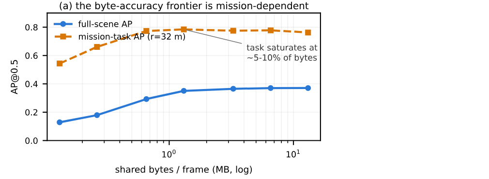

Executive Summary
드론 다섯 대가 서로 본 것을 나누면 한 대만 볼 때보다 탐지 정확도가 두 배로 올라갑니다. 값은 프레임마다 13.1메가바이트입니다. 편대 하나가 한 장면을 처리할 때마다 그만큼이 무선 링크를 지나가야 한다는 뜻이고, 이건 드론이 실제로 쓰는 링크가 감당하는 양을 한참 넘습니다. 9월 1일 arXiv에 올라온 텍사스텍 연구진의 논문은 이 교환량을 임무에 맞춰 깎으면 어디까지 견디는지를 쟀습니다.
공개된 DiscoNet 체크포인트를 재학습 없이 그대로 두고, 평가 시점에 공유 스케줄만 바꿔 가며 실험했습니다. 표적 하나를 좇는 임무 구역 안에서 보면 전체 공유 바이트의 5~10%만 써도 정확도 차이가 통계적으로 잡히지 않았습니다. 같은 실험이 반대편 경고도 함께 내놨습니다. 어느 공유 정책이 이기는지가 대역폭 예산에 따라 뒤집혀서, 한쪽으로 고정해 두면 최대 7.7 AP를 잃습니다.
그래서 저자들이 제안한 것이 맥락 평면입니다. 무거운 인지 데이터를 나르는 데이터 평면 옆에, 1KB 이하의 상태 요약만 10Hz로 도는 얇은 평면을 하나 더 두자는 설계입니다. 아래에서는 논문이 잰 것과 유보한 것을 차례로 따라가고, 마지막 6절에만 논문에 없는 데이터 파이프라인 쪽 읽기를 덧붙였습니다.
주요 수치
출처: Liangkai Liu, Xiaoxiao Wu, Fleets Need a Context Plane: Rethinking Cooperative Perception for Autonomous Drones, arXiv:2609.00659(2026-09-01)
5~10%
임무 정확도가 유지된 바이트
전체 공유는 편대 한 프레임에 13.1MB를 씁니다
7.7 AP
정책을 고정한 대가
넉넉한 예산에서 이기던 정책을 마른 예산까지 들고 갔을 때
5.9 AP
전체 장면 점수가 같은 두 정책의 임무 구역 격차
전체 장면에서는 둘 다 0.257 AP로 구분되지 않았습니다
0.01%
맥락 평면이 쓴 대역폭 몫
105MB/s를 조종하는 데 10.1KB/s를 썼습니다
함께 보면 정확도는 두 배, 값은 프레임당 13.1MB
여러 대가 같은 장면을 나눠 보는 협동 인지에서, 무엇을 주고받을지는 크게 세 층위로 갈립니다. 원본 센서 데이터를 그대로 보내면 정보는 가장 많이 남지만 대역폭이 가장 많이 듭니다. 탐지 결과만 보내면 값은 싸지만 쓸 만한 정보가 버려집니다. 그 사이가 중간 융합입니다. 신경망이 만든 잠재 특징 맵을 주고받는 방식이고, 최근 시스템 대부분이 여기에 서 있습니다.
문제는 그 중간이 여전히 무겁다는 것입니다. 이 논문이 실험대로 삼은 UAV3D 벤치마크는 드론 다섯 대가 카메라만으로 협동 탐지를 하는 설정인데, 피어 한 대가 만드는 것은 80채널짜리 FP16 조감도 특징 맵입니다. 다섯 대가 전부 나누면 편대 한 프레임에 13.1메가바이트가 오갑니다. 얻는 것은 분명합니다. 융합 없이 한 대가 내는 정확도가 0.185 AP인데 전체 공유는 0.371 AP까지 올라갑니다. 18.5 AP의 차이이고, 신뢰구간은 16.9에서 20.3 사이입니다.
여기서 AP는 평균 정밀도이고, 이 글에서 몇 AP라고 쓴 값은 그 지표의 백분율 포인트 차이를 가리킵니다. 협동이 이득이라는 것 자체는 논쟁거리가 아닙니다. 논쟁은 그 이득을 사 오는 값에 있습니다.
그런데 지금 나와 있는 시스템 대부분은 무엇을, 누구에게, 어느 충실도와 주기로 보낼지를 배포 전에 정해 두고 비행 내내 그대로 갑니다. 이 습관은 지상 차량 통신에서 왔습니다. 차량 벤치마크의 세계에서는 그 선택이 대체로 합리적입니다. 경로가 고정돼 있고, 전원은 엔진이나 전력망에서 나오고, 시점은 거의 평면이고, 노변 인프라와 정밀 지도가 옆에서 받쳐 줍니다.
하늘에서는 그 전제가 하나씩 무너집니다. 한 번의 출격 안에서 임무 단계가 바뀌고, 배터리가 줄고, 대형 기하가 여섯 자유도로 흔들리고, 각 드론이 덮는 장면이 겹쳤다 벌어졌다 합니다. 런타임에 적응하는 방법이 없지는 않지만, 저자들의 정리에 따르면 그런 방법들도 신호 하나에만 반응합니다. 공간 신뢰도를 보고 특징을 성기게 만드는 Where2comm이 한 예이고, 런타임에 충실도를 갈아 끼우는 HydraCollab이 다른 예입니다. 여러 축이 동시에 움직이는 비행에서 한 축만 읽는 정책은 임무의 상당 구간을 틀린 결정으로 보내게 됩니다.
이 물음이 지금 올라온 데에는 사정이 있습니다. 항공 협동 인지 벤치마크가 이제 막 나왔는데 지상 V2X의 공유 규약을 손대지 않고 그대로 들여왔고, Orin급 온보드 연산이 보급되면서 특징 수준 공유가 실제로 가능해지자 대역폭과 전력 청구서가 곧바로 따라왔습니다. 나를 수단이 없는 것도 아닙니다. DDS의 서비스 품질 설정과 ROS 2 토픽이면 됩니다. 저자들이 비어 있다고 보는 것은 인터페이스 한 자리뿐입니다.
재학습 없이 공유 스케줄만 돌려 쟀다
결과보다 실험 설계를 먼저 봅니다. 저자들은 새 모델을 학습시키지 않았습니다. 공개된 DiscoNet 체크포인트를 추론에만 쓰고, 특징을 주고받는 그 지점에 손잡이를 달아 평가 시점에 돌렸습니다. 모델 가중치가 고정된 채로 공유 결정만 달라지니, 정확도 차이를 학습 결과가 아니라 공유 정책의 몫으로 읽을 수 있습니다.
손잡이는 세 종류입니다. 예산 ρ는 자기 드론이 받는 특징 셀 수를 전체 공유 대비 몇 분의 몇으로 제한합니다. 피어 선택 정책은 어느 드론이 특징을 보태는지를 고릅니다. 배분 규칙은 그 예산을 피어들 사이에 어떻게 나눌지를 정하고, 균등 배분과 드론 자세에서 계산한 지면 발자국 겹침 비례 배분 두 가지를 씁니다. 전송 바이트는 남긴 셀 수에 80채널과 2바이트를 곱해 정확히 셉니다. 그래서 모든 비교가 같은 바이트 위에서 이뤄집니다.
정확도는 회전 조감도 IoU 기준 AP@0.5로 재고, 대상은 UAV3D의 미니 검증 스플릿 80프레임입니다. 장면마다 한 프레임씩 뽑은 구성이라 프레임을 독립 표본으로 다루고, 대괄호로 적은 값은 그 80프레임에 대한 95% 페어드 부트스트랩 신뢰구간입니다. 구간이 0을 포함하면 유의하지 않다고 표시합니다. 하네스는 프레임마다 예측과 정답, 에이전트별 통신 비용을 함께 기록하고, 정확도 계산은 별도 평가기가 맡습니다. 외부 모델인 DiscoNet은 추론에만 쓰였고 공유 정책과 바이트 계산과 평가는 저자들이 직접 구현해 검증했습니다.

저자들이 스스로 그은 선도 분명합니다. 벤치마크 하나와 공개 모델 하나로 한 실험이고, 다른 데이터셋이나 다른 융합 모델, 실제 무선 환경에서 이 수치가 그대로 유지된다고는 주장하지 않습니다. 미니 검증 스플릿을 쓴 만큼 절대 AP 값을 전체 테스트 스플릿 결과와 나란히 놓아서도 안 된다고 못 박습니다. 이 논문이 주장하는 것은 특정 숫자가 아니라, 최선의 공유 정책이 런타임 맥락에 따라 달라지며 어떤 고정 정책도 전 구간에서 최선이 아니라는 쪽입니다.
이 논문이 내놓은 결과물 하나는 측정 방식 그 자체입니다. 공개된 협동 인지 체크포인트를 정책 공간을 재는 탐침으로 쓰고, 계측 장치가 각 정책의 통신 비용을 정확히 기록하게 했습니다. 재학습 예산 없이도 기존 모델 위에서 공유 정책을 평가할 수 있게 됩니다.
임무 구역으로 좁히면 5%에서도 차이가 잡히지 않았다
먼저 전체 장면 기준입니다. 바이트를 10분의 1로 줄여 ρ를 0.1로 놓으면 전체 공유보다 2.0 AP 낮아집니다. 신뢰구간은 0.8에서 3.4 사이입니다. 5%까지 줄이면 협동으로 얻은 이득의 58%가 남습니다. 곡선이 무너지는 지점은 1%입니다. 거기서는 전체 공유 대비 24 AP가 빠집니다. 대역폭을 마지막으로 열 배 더 쓰고 얻는 것이 AP 두 점 남짓이고, 그 아래로 더 깎으면 협동 자체가 무너집니다.
여기에 임무를 얹으면 그림이 달라집니다. 저자들은 표적 하나를 좇는 과업을 가정하고 반경 32미터의 임무 구역 안에서만 정확도를 다시 쟀습니다. ρ가 0.05에서 0.1 사이일 때 임무 구역 AP는 0.773에서 0.784 사이로 나왔습니다. 전체 공유가 같은 구역에서 낸 값은 0.763입니다. 가장 큰 차이가 2.2 AP인데 신뢰구간이 마이너스 0.5에서 플러스 5.1까지 걸쳐 0을 포함합니다. 통계적으로 구분되지 않는다는 뜻입니다.

| 조건 | 전체 장면 | 임무 구역(32m) |
|---|---|---|
| 융합 없음(드론 한 대) | 0.185 AP | 보고 없음 |
| 전체 공유(13.1MB/프레임) | 0.371 AP | 0.763 AP |
| ρ = 0.1 (바이트 10%) | 전체 공유보다 2.0 AP 낮음 [0.8, 3.4] | 0.773~0.784 구간, 차이 유의하지 않음 |
| ρ = 0.05 (바이트 5%) | 협동 이득의 58% 유지 | 0.773~0.784 구간, 차이 유의하지 않음 |
| ρ = 0.01 (바이트 1%) | 전체 공유보다 24 AP 낮음 | 보고 없음 |
UAV3D 미니 검증 스플릿 80프레임, 회전 조감도 IoU 기준 AP@0.5. 대괄호는 95% 페어드 부트스트랩 신뢰구간입니다. 미니 스플릿을 쓴 실험이라 절대 AP 값을 전체 테스트 스플릿 결과와 비교해서는 안 된다고 논문이 5절 서두에 밝혀 두었습니다. 출처: arXiv:2609.00659 5-A절, 5-B절.
조건을 분명히 해 둘 필요가 있습니다. 바이트 5~10%로 전체 공유와 같은 정확도가 나왔다는 문장은 임무 구역 안에서의 이야기입니다. 같은 예산에서 전체 장면 정확도는 여전히 2.0 AP가 빠집니다. 그러니까 이 결과는 협동 인지가 원래 공짜로 정확해진다는 말이 아니라, 지금 하는 일과 무관한 구역에 쓰이던 대역폭과 전력이 그만큼이었다는 말입니다. 임무를 모르는 전체 공유는 그 몫까지 함께 실어 나릅니다.
예산이 바뀌면 이기던 정책이 진다
다음 질문은 같은 바이트를 누구에게 쓰느냐입니다. 예산을 0.25로 고정하고 피어 선택을 바꿔 봤더니, 두 피어만 고르는 정책들 사이에는 차이가 없었습니다. 가장 안 겹치는 두 대에서 가장 겹치는 두 대를 뺀 값이 0.8 AP였고 신뢰구간은 마이너스 0.8에서 플러스 2.3, 가장 안 겹치는 두 대와 무작위 두 대의 차이는 0.1 AP에 구간이 마이너스 1.1에서 플러스 1.3입니다. 둘 다 0을 포함합니다. 유의하게 갈린 것은 다른 축입니다. 네 피어 전부에 바이트를 퍼뜨리는 쪽이 어떤 두 피어 정책보다 4.8 AP 앞섰습니다.
이 대형에서 겹침이 피어의 가치를 예측하지 못한 데는 이유가 있습니다. 평가에 쓴 십자 대형은 드론 간격이 약 20미터이고 각 드론의 지면 발자국이 42미터라, 서로의 겹침이 고만고만합니다. 겹침 비례 배분이 균등 배분과 비슷하게 나온 것도 같은 사정입니다. 저자들은 이걸 배분이 중요하지 않다는 결론으로 읽지 말라고 덧붙입니다. 대형이 넓게 벌어져 겹침이 고르지 않게 되면 효과가 커질 것이라는 예상입니다.
이 결과에서 저자들이 끌어낸 것은 자세만 놓고 계산한 기하 규칙으로는 어느 피어가 쓸모 있는지 가릴 수 없다는 것입니다. 그러려면 누가 무엇을 실제로 보고 있는지를 적은 커버리지 맥락이 있어야 하고, 그게 뒤에 나올 디스크립터가 나르는 내용입니다.
예산을 바꿔 가며 같은 비교를 반복하자 순위가 뒤집혔습니다. 예산이 마른 0.02에서는 두 피어에 몰아주는 쪽이 네 피어에 퍼뜨리는 쪽을 7.7 AP 앞섭니다. 0.05에서는 그 우위가 1.4 AP로 줄고, 0.1에서는 부호가 바뀌어 퍼뜨리는 쪽이 4.0 AP 앞섭니다. 0.25에서는 격차가 4.8 AP로 벌어집니다. 뒤집히는 지점은 전체 공유 대역폭의 5%에서 10% 사이이고, 실제 무선 링크가 비행 중에 어렵지 않게 넘나드는 구간입니다.
왜 뒤집히는지를 논문이 따로 설명하지는 않습니다. 다만 하네스에서 뽑은 프레임 하나를 보면 살아남은 셀의 모양이 예산에 따라 달라집니다. 0.25에서는 남은 셀이 장면의 물체 구조를 따라 퍼지고, 0.02까지 마르면 가장 강한 물체 증거 주위로 몰립니다.
고정의 대가는 양쪽에서 나옵니다. 넉넉한 예산에서 이기던 정책을 링크가 마를 때까지 들고 가면 7.7 AP를 잃고, 마른 예산에서 이기던 정책을 대역폭이 넉넉해진 뒤에도 붙들면 4.8 AP를 잃습니다. 어느 한쪽으로 못을 박아도 손해라는 뜻입니다. 저자들은 여기서 맥락에 따라 정책을 갈아 끼울 때의 잠재 이득을 재기 위해 오라클을 하나 만듭니다. 예산마다 평가된 고정 정책 중 최선을 골라 주는 장치입니다. 네 예산에 걸친 평균이 0.320 AP로, 가장 좋은 단일 고정 정책의 0.299 AP보다 2.1 AP 높습니다. 절반의 프레임으로 정책을 고르고 나머지 절반에서 확인했을 때도 2.0 AP가 남아, 고른 값이 선택 편향의 산물은 아니었습니다.
이 오라클이 무엇이 아닌지는 논문이 직접 밝혀 둡니다. 이미 평가해 둔 고정 정책들 사이에서만 고르는 측정 도구이고, 실시간으로 도는 온라인 정책이 아닙니다. 맥락 평면이 열어 주는 더 넓은 지시 공간에서 실제로 쓸 만한 온라인 정책을 설계하는 일은 향후 과제로 남겨 뒀습니다.
4.1전체 장면에서 동점이던 두 정책이 임무 구역에서는 갈린다
가장 날이 선 결과는 마지막에 나옵니다. 예산이 0.02일 때, 시야가 가장 많이 겹치는 두 피어를 고른 정책과 가장 안 겹치는 두 피어를 고른 정책이 전체 장면 기준으로 똑같이 0.257 AP를 냈습니다. 예산이라는 축 하나만 들고서는 두 정책을 구분할 방법이 없습니다.
임무 맥락을 더하자 동점이 깨졌습니다. 표적을 좇는 과업 기준으로 겹치는 쪽은 0.787 AP, 안 겹치는 쪽은 0.728 AP였습니다. 5.9 AP 차이이고 신뢰구간은 2.5에서 9.4 사이라 유의합니다. 예산이 0.05일 때는 두 축이 반대로 얽힙니다. 전체 장면에서는 두 피어에 몰아주는 쪽이 낫고, 임무 구역 안에서는 네 피어에 퍼뜨리는 쪽이 3.1 AP 낫습니다. 다만 이쪽은 신뢰구간이 0을 포함해, 방향은 일관되지만 지금 표본에서 유의하지는 않다고 저자들이 적어 뒀습니다.
정리하면 예산만 읽는 정책은 예산과 임무를 함께 읽는 정책에 비해 약 6 AP를 그냥 두고 옵니다. 두 신호는 서로 다른 곳에서 오는 값이 아닙니다. 배터리, 링크 상태, 커버리지, 임무 단계가 모두 같은 1KB 디스크립터 안에 들어갑니다. 축을 따로 읽는 게 문제였지 신호를 구하기 어려운 게 문제가 아니었다는 것이 이 논문의 논지입니다.
데이터 평면 옆에 맥락 평면을 놓는다
편대에는 이미 데이터 평면이 있습니다. 특징 맵과 탐지 결과와 트랙이 지나가는 무거운 길입니다. 없는 것은 그 교환을 다스릴 정보가 놓일 자리입니다. 배터리가 얼마 남았는지, 링크가 어떤지, 지금 어느 구역이 임무인지, 누가 무엇을 보고 있는지는 어딘가에 흩어져 있거나 모델 가중치 안에 녹아 있습니다. 이 논문의 제안은 그 자리를 명시적으로 하나 만들자는 것입니다.
구조는 단순합니다. 드론마다 자기 상태를 요약한 디스크립터를 1KB 이하로 10Hz에 한 번씩 편대 공용 버스에 올립니다. 각 드론의 정책 함수는 편대 전체의 디스크립터를 읽고 나가는 링크마다 지시를 하나씩 내놓습니다. 게이트가 그 지시를 데이터 평면 트래픽에 적용합니다. 정책은 페이로드를 절대 만지지 않습니다.
드론끼리 합의하는 절차는 없습니다. 정책이 읽는 것은 자기가 받아 둔 편대 맥락 사본뿐이라 협상 프로토콜이 필요하지 않습니다. 사본이 서로 어긋나 있는 동안에는 드론마다 판단이 잠깐 갈릴 수 있는데, 정책 전환에 걸어 둔 지연과 정보가 낡을수록 공유를 줄이는 쪽으로만 움직이게 한 규칙이 그 어긋남의 대가를 묶어 둡니다. 사본이 맞춰지면 불일치도 사라진다는 것이 저자들의 설명입니다.
디스크립터에는 네 묶음이 들어갑니다. 기하는 위치와 자세와 속도, 지면 반경입니다. 플랫폼은 배터리와 CPU, GPU 여유, 그리고 피어별 실효 처리량입니다. 장면은 16 곱하기 16 격자에 셀당 2비트로 적은 커버리지입니다. 잘 봤는지, 흐리게 봤는지, 못 봤는지, 새로 발견했는지 네 가지 상태만 적습니다. 임무는 현재 단계와 책임 구역, 우선 표적 번호입니다. 다섯 대 편대 기준으로 직렬화하면 180바이트가 나옵니다.
| 묶음 | 담기는 것 | 크기 |
|---|---|---|
| 공통 | 타임스탬프, 에이전트 번호 | 9B |
| 기하 | 위치·자세·속도, 지면 반경 | 40B + 4B |
| 플랫폼 | 배터리·CPU·GPU 여유, 피어별 실효 처리량 | 12B + 16B |
| 장면 | 16×16 커버리지 격자(셀당 2비트), 새 발견 플래그 | 64B + 1B |
| 임무 | 임무 단계, 책임 구역, 우선 표적 번호 | 1B + 16B + 표적당 2B |
프로토타입이 실제로 싣는 스키마입니다. 다섯 대 편대 기준 직렬화 크기는 180바이트로, 계약이 정한 1KB 상한 안에 여유 있게 들어갑니다. 표 첫 줄의 공통 항목은 네 묶음 밖의 머리말이고, 장면 항목이 커버리지 진술이라는 점이 설계의 핵심입니다. 누가 무엇을 봤는지만 적고 특징 자체는 보내지 않습니다. 출처: arXiv:2609.00659 표 1.
이 평면이 지켜야 할 규칙도 여섯 개로 못 박아 뒀습니다. 크기와 주기에 상한을 둘 것, 전달은 최선 노력으로 하되 오래된 정보를 만나면 보수적으로만 움직일 것, 맥락 평면은 인지 페이로드를 절대 나르지 않을 것, 정책은 디스크립터만 읽을 것, 정책 전환에 지연을 걸어 잦은 스위칭을 막을 것, 디스크립터를 인증할 것. 프로토타입에서는 세 주기가 지난 디스크립터를 저하로, 열 주기가 지난 것을 이탈로 표시합니다. 정보가 낡을수록 공유를 늘리는 방향으로는 결정할 수 없게 만든 장치입니다.
그 규칙이 그은 테두리 안에서 정책이 실제로 내리는 결정은 여섯 가지입니다. 비싼 인지 연산을 아예 돌릴지, 누구에게 보낼지, 충실도 사다리의 어느 칸을 쓸지, 어느 공간 구역을 보낼지, 어느 주기와 마감으로 보낼지, 받는 쪽에서 어떤 가중치로 융합할지. 이 가운데 충실도 사다리는 링크 하나에서 가장 무거운 칸과 가장 가벼운 칸의 차이가 만 배 규모입니다. 원본 영상이 프레임당 5.4메가바이트, 조감도 특징 전체가 655킬로바이트, 예산 0.25에서 164킬로바이트, 0.02에서 13킬로바이트, 탐지 결과가 1킬로바이트 안팎, 트랙이 0.24킬로바이트입니다. 규칙으로 짠 정책이든 학습한 함수든 계약은 가리지 않습니다.
이 계약이 실제로 어떤 모양인지는 프로토타입이 싣고 있는 정책 하나를 보면 짐작이 갑니다. 배터리가 표현과 주기의 출발점을 정하고, 링크 품질이 그 둘을 더 내릴 수 있습니다. 임무 단계가 어느 구역을 보낼지 정하고, 커버리지 겹침이 가장 쓸모 있는 두 피어를 고릅니다. 규칙마다 어느 디스크립터 필드를 읽는지까지 표에 적혀 있습니다.
| 맥락 조건 | 결정 | 읽는 필드 |
|---|---|---|
| 배터리 60% 이상 | 특징 맵, 10Hz | 플랫폼 |
| 배터리 30% 이상 60% 미만 | 특징 맵, 5Hz | 플랫폼 |
| 배터리 30% 미만 | 탐지 결과, 2Hz | 플랫폼 |
| 피어 실효 처리량 5Mbps 미만 | 탐지 결과로 내리고 주기 2Hz 이하 | 플랫폼 |
| 임무 단계 = 추적 | 공간 구역 = 반경 32m 원반 | 임무, 기하 |
| 항상 | 겹침 상위 두 피어 | 기하 |
프로토타입 정책을 결정표로 적은 것입니다. 임계값은 모듈 상수이고, 각 규칙은 디스크립터 필드만 읽습니다. 3절에서 정확도를 다시 잰 반경 32미터 임무 구역이 여기서는 규칙 한 줄로 나타납니다. 출처: arXiv:2609.00659 표 3.
저자들이 120초짜리 평가 트레이스를 이 정책에 흘려 보내자 결정이 차례로 움직였습니다. 배터리가 줄면서 1번에서 0번으로 가는 링크의 표현과 주기가 60%와 30% 지점에서 바뀌었고, 60초 지점에서 2번 드론의 링크 품질이 떨어지자 그 드론의 나가는 링크가 디스크립터 한 주기 안에 탐지 결과 수준으로 내려갔습니다. 45초 지점의 임무 단계 전환은 공간 구역 지시 하나로 특징 페이로드를 10분의 1로 줄였습니다. 이 가운데 어느 것도 인지 모델을 건드리거나 다시 학습시키지 않습니다.
기존 방법들과의 관계도 이 틀 안에서 정리됩니다. 신뢰도 맵으로 구역을 고르는 방법, 시각 특징으로 통신 상대를 고르는 방법, 고정 전체 연결 위에서 융합 가중치를 학습하는 방법, 네트워크 지연으로 낡은 특징을 보정하는 방법, 늘 같은 압축률을 쓰는 방법이 각각 이 정책 공간의 한 고정점이 됩니다. 가장 가까운 것은 같은 해에 나온 HydraCollab입니다. 장면 신뢰도를 보고 중간 융합과 후기 융합을 오가는데, 읽는 축이 하나뿐이라는 점은 나머지와 같습니다.
논문은 이 방법들을 표 하나에 늘어놓고 빈틈 두 가지를 짚습니다. 지금 있는 적응형 방법들은 맥락 축을 많아야 하나만 읽어서 임무와 장면과 플랫폼과 기하를 함께 볼 수 없습니다. 그리고 적응 논리가 특정 모델 구조나 가중치에 묶여 있어 갈아 끼우거나 감사하거나 검증하기가 어렵습니다. 저자들은 맥락 평면이 이것들을 대체하는 물건이 아니라고 분명히 씁니다. 공통 인터페이스 뒤에 세워 두고 런타임에 고르고 조합할 수 있게 만드는 자리입니다.
적응을 융합 모델 안에 넣는 길도 있습니다. 배터리와 임무 단계와 대형 기하를 조건으로 받는 모델 하나로 다 처리하는 방식입니다. 저자들이 그러지 않고 타입이 정해진 인터페이스 뒤에 논리를 둔 이유는 네 가지입니다. 제조사가 다른 드론들은 인지 모델이 서로 달라도 같은 디스크립터와 지시는 주고받을 수 있습니다. 기록으로 남은 맥락과 결정은 그 드론이 왜 공유를 바꾸거나 멈췄는지 그대로 보여 주지만, 모델 가중치와 어텐션 점수는 그렇게 읽히지 않습니다. 임무가 달라지면 인지 모델을 다시 학습시키지 않고 정책만 바꿔 끼울 수 있습니다. 입력과 출력이 유계이고 타입이 정해진 함수는 임무 수준의 안전 요구와 대조하기가 더 쉽습니다.
이 평면을 얹는 값이 싸다는 것이 설계의 실무적 근거입니다. Jetson AGX Orin에서 ROS 2 Humble로 돌린 프로토타입에서, 네 에이전트가 180바이트를 10Hz로 올리고 초당 80건의 지시가 오가는 데 초당 10.1킬로바이트가 들었습니다. 같은 조건에서 데이터 평면이 나른 것은 초당 105메가바이트입니다. 비율로 0.01% 남짓입니다. 다만 이 데이터 평면은 실제 인지 출력이 아니라 게이트가 지시대로 만들어 낸 특징 크기의 합성 페이로드입니다. 오버헤드 비율을 재려고 짠 구성이지 UAV3D 파이프라인을 그대로 돌린 것이 아닙니다. 정책 평가는 중앙값 0.10밀리초, 99퍼센타일 0.13밀리초로 10Hz 주기가 주는 100밀리초 마감의 1000분의 1 수준이었고, 프로토타입 전체가 코어 하나의 9%를 썼습니다. 배터리와 링크와 임무 단계를 읽는 그 정책은 ROS 의존성 없는 42줄짜리 파이썬 함수라 따로 단위 테스트가 됩니다.
남은 문제도 논문이 스스로 다섯 가지로 적어 뒀습니다. 정책이 입출력 타입이 정해진 유한한 함수라 안전 속성을 기계적으로 검증할 여지가 있다는 것은 아직 제안이지 결과가 아닙니다. 커버리지에 대해 거짓말하는 드론이 동료의 시선을 특정 구역에서 떼어 놓을 수 있어, 인터페이스를 표준화하기 전에 신뢰 보정 연구가 필요합니다. 이 논문이 다룬 것은 수동적 공유뿐이고, 드론이 무엇을 볼지 스스로 재배치하는 문제는 범위 밖입니다. 기존 항공 데이터셋에 배터리와 링크와 임무 트레이스가 없어 정책을 제대로 평가할 자료 자체가 부족하다는 문제도 있습니다. 정책 품질을 지키는 가장 작은 디스크립터가 얼마인지는 얼마나 줄이면 무엇이 깨지는지를 따지는 문제로 열어 뒀습니다.
데이터 파이프라인에서도 같은 결정이 설계 시점에 굳는다
여기까지가 논문입니다. 드론에서 눈을 떼고 보면 구조가 낯익습니다. 무거운 원본을 통째로 넘기는 파이프라인 옆에, 지금 무엇이 필요한지만 적은 얇은 요약 한 겹을 따로 두는 설계입니다. 그 요약을 보고 무엇을 계산하고 무엇을 보낼지 고르면 무거운 쪽의 대부분이 지워집니다. 이 논문의 실험에서는 임무 구역 정확도를 지킨 채 90% 넘게 지웠습니다.
낯익은 게 당연합니다. 저자들도 별도 평면이라는 발상 자체를 자기 것이라고 주장하지 않습니다. 인터넷의 knowledge plane, 소프트웨어 정의 네트워킹의 제어·데이터 분리, 맥락 인지 컴퓨팅, 적응형 비트레이트 스트리밍의 충실도 사다리를 계보로 적어 두었습니다. 특히 가까운 것은 링크가 지금 과업에 필요한 정보를 날라야 한다고 보는 과업 지향 통신이고, 이 논문의 임무 맥락 결과는 그 원칙을 협동 조감도 인지에 적용한 것이라고 스스로 자리를 잡습니다. 새롭다고 말하는 범위는 좁습니다. 편대 전체가 맥락을 올리는 공용 버스가 있고 거기서 피어 선택과 표현과 공간 구역과 주기와 융합 신뢰도 같은 인지 전용 지시를 끌어내는 구성은 앞선 연구에 없었다는 것까지입니다.
여러 에이전트가 물려 도는 데이터 파이프라인에서도 같은 결정이 대체로 설계 시점에 굳습니다. 어느 단계가 어느 단계에 무엇을 넘길지, 문서 전체를 넘길지 요약을 넘길지, 어느 도구를 항상 부를지가 코드에 박혀 있고 실행 중에는 바뀌지 않습니다. 부하가 낮을 때 맞춰 둔 설정이 붐빌 때도 그대로 도는 상황은 여기서도 익숙합니다.
아래 세 가지는 논문에 없습니다. 이 글이 파이프라인 쪽으로 옮겨 본 물음입니다.
- 지금 무엇을 넘길지 정하는 규칙이 코드 어디에 있는가. 그 규칙이 읽는 신호가 몇 개이고, 그중 몇 개가 실행 중에 실제로 갱신되는가.
- 단계마다의 상태를 요약하는 얇은 표준 형식이 있는가. 없다면 그 정보는 지금 어디에 흩어져 있는가.
- 전송량을 줄였을 때 나빠진 것을 전체 평균 하나로만 보고 있지 않은가. 이 논문에서 전체 장면 정확도는 2.0 AP가 빠졌지만 임무 구역 안에서는 차이가 잡히지 않았습니다. 어느 쪽을 보느냐가 결론을 바꿉니다.
마지막 항목이 이 논문에서 가장 실무적인 대목입니다. 무엇을 줄일지 정하려면 무엇을 지켜야 하는지를 먼저 정해야 합니다. 지켜야 할 것이 정해지지 않은 상태에서 전체 평균만 보면 깎을 수 있는 여지가 실제보다 작아 보입니다. 이 실험에서 그 여지는 열 배였습니다.
Editor's Note
페블러스가 데이터 품질을 진단할 때 자주 만나는 질문이 무엇을 남기고 무엇을 버릴지입니다. 이 논문은 그 판단을 설계 시점에 못 박는 대신 런타임에 미루는 한 가지 방법을 다른 도메인에서 보여 줍니다. 다만 옮겨 읽을 때 조건도 함께 옮겨야 합니다. 이 결과는 벤치마크 하나와 공개 모델 하나 위에서, 표적을 좇는 임무 구역을 가정하고 얻은 것입니다. 저자들은 프로토타입과 계측 하네스, 트레이스를 함께 공개해 후속 검증의 문을 열어 뒀습니다.
참고문헌
- 1.Liu, L., & Wu, X. (2026). "Fleets Need a Context Plane: Rethinking Cooperative Perception for Autonomous Drones." arXiv:2609.00659.